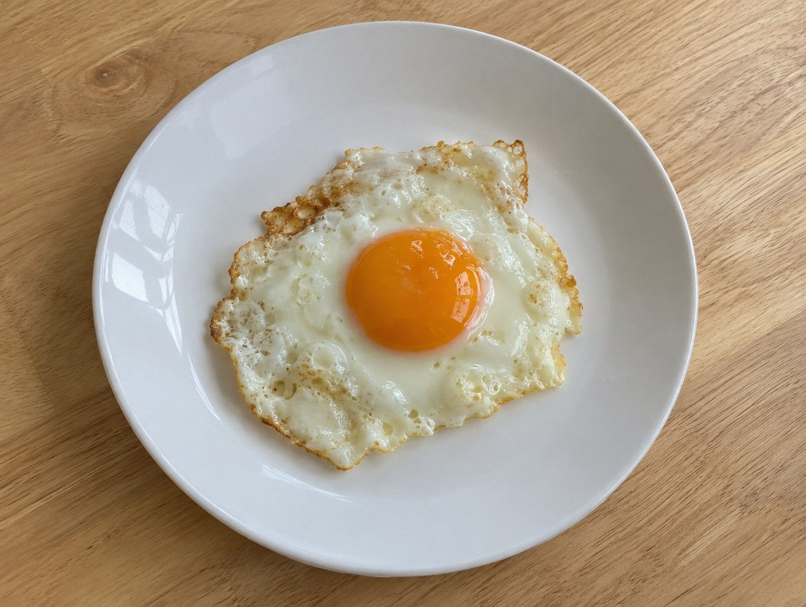
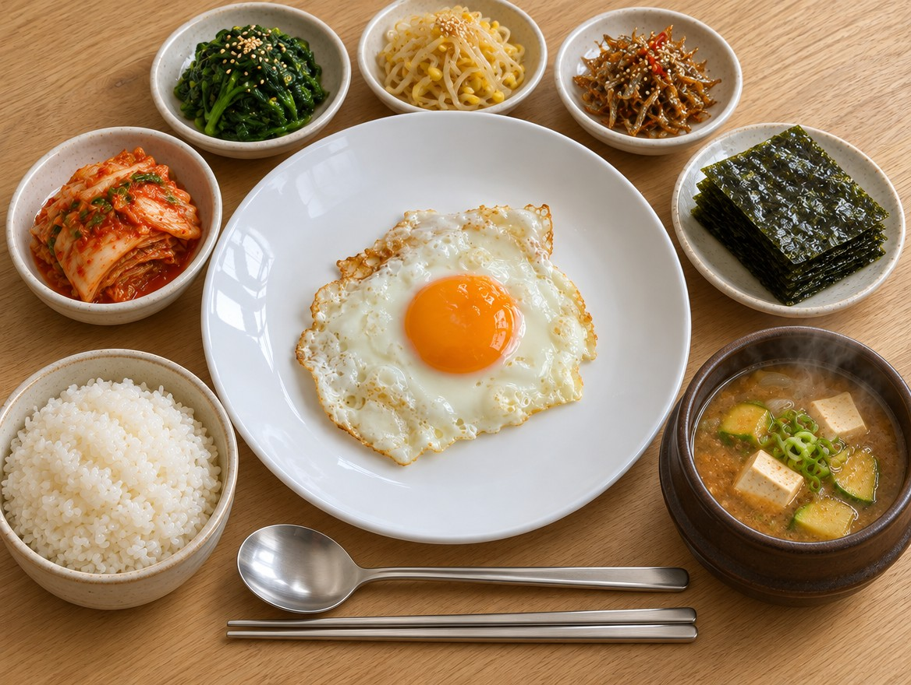
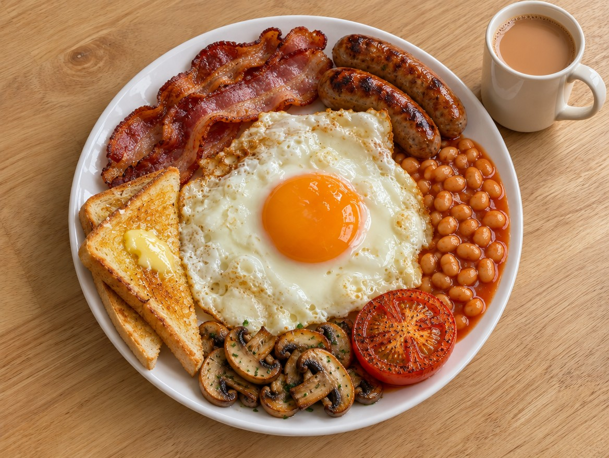
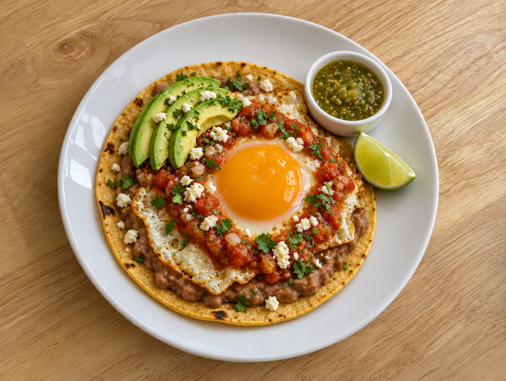
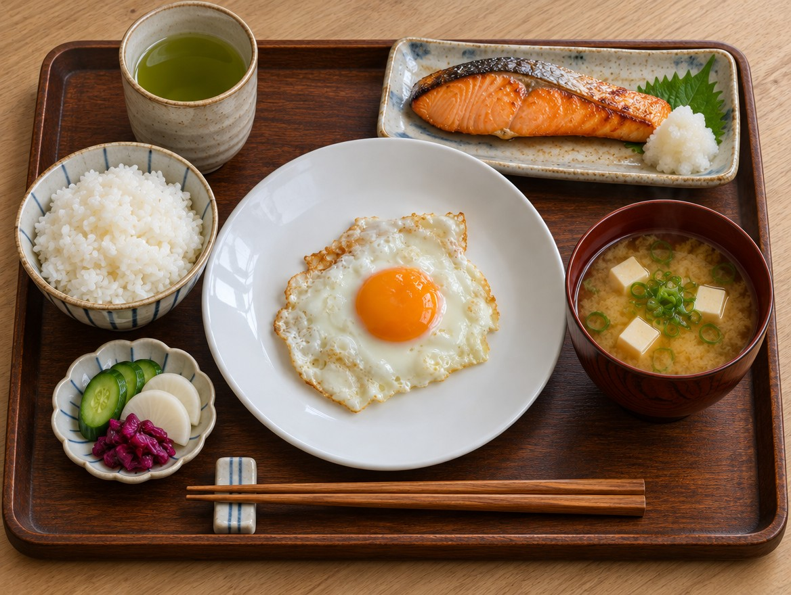
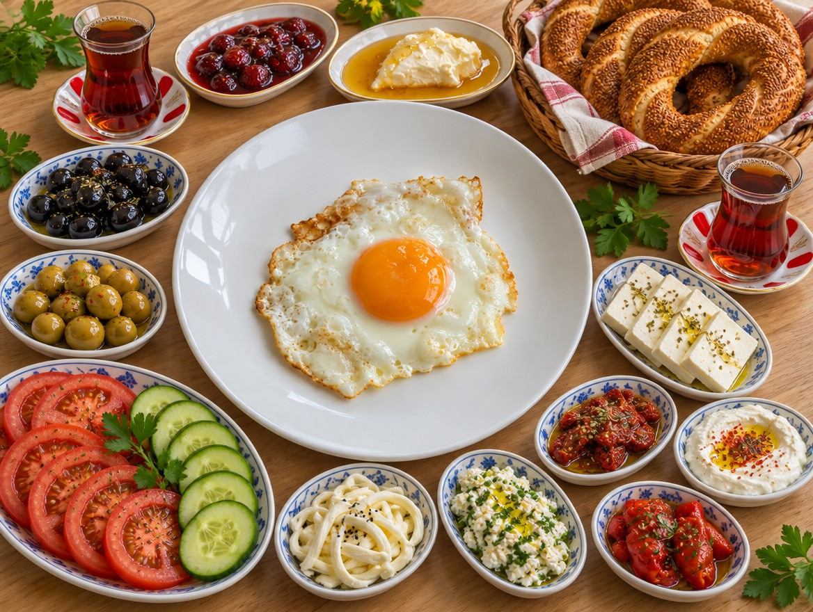

AI 문방구 · 아침상 5
계란 프라이 하나
→ 나라별 아침상 5
댓글로 신청해주셔서 고마워요. 영상 속 아침상은 전부 힉스필드(GPT Image 2.6)에 계란 프라이 사진 한 장을 넣고 나라 이름만 바꿔 만든 결과예요. 메뉴 사진이나 블로그 표지 만들 때 써보세요.
BASE원본 계란 프라이 사진 (전)

01Korean
밥과 김치
흰쌀밥, 김치, 김, 된장국, 반찬 몇 가지.
전

후Keep the exact same sunny-side-up fried egg on the same round white plate, same camera angle, same wooden table. Build a Korean home breakfast around it: a bowl of white rice, a small dish of kimchi, a stack of roasted seaweed sheets, a small bowl of soybean paste soup, a few side dishes (banchan) in small bowls, metal chopsticks and spoon. Natural daylight, appetizing food photo. No text, no logos.
02full English
베이컨과 콩
베이컨, 소시지, 콩 요리, 구운 토마토, 토스트, 홍차.
전

후Keep the exact same sunny-side-up fried egg on the same round white plate, same camera angle, same wooden table. Turn it into a full English breakfast on that plate: crispy bacon rashers, sausages, baked beans in tomato sauce, grilled tomato half, sauteed mushrooms, buttered toast, with a mug of tea beside it. Natural daylight, appetizing food photo. No text, no logos, no brand labels.
03Mexican
토르티야와 살사
우에보스 란체로스. 토르티야 위 계란에 살사와 아보카도.
전

후Keep the same sunny-side-up fried egg, same camera angle, same wooden table. Make it Mexican huevos rancheros: the fried egg now sits on a warm corn tortilla on the same round white plate, topped with chunky red ranchero salsa, refried beans, sliced avocado, crumbled white cheese, chopped cilantro, a lime wedge, a small bowl of green salsa beside. Natural daylight, appetizing food photo. No text, no logos.
04Japanese
미소국과 생선구이
나무 쟁반에 미소국, 연어구이, 밥, 절임, 녹차.
전

후Keep the exact same sunny-side-up fried egg on the same round white plate, same camera angle, same wooden table. Build a traditional Japanese breakfast set around it on a dark wooden tray: a small lacquer bowl of miso soup with tofu and scallion, a grilled salted salmon fillet on a rectangular plate, a bowl of white rice, small pickles, wooden chopsticks on a rest, a cup of green tea. Natural daylight, appetizing food photo. No text, no logos.
05Turkish
빵과 올리브와 치즈
작은 접시 가득 올리브, 치즈, 채소, 꿀, 시미트 빵, 홍차.
전

후Keep the exact same sunny-side-up fried egg on the same round white plate, same camera angle, same wooden table. Build a Turkish breakfast spread around it: many small dishes of black and green olives, white feta cheese slices, sliced tomatoes and cucumbers, honey with kaymak cream, jam, a basket of sesame simit bread rings, tulip-shaped glasses of black tea. The table full and abundant. Natural daylight, appetizing food photo. No text, no logos.
HOW내 사진으로 하는 법
음식 하나가 접시째 잘 보이게 찍은 사진을 올리고 [ ]만 바꾸세요. "Keep the exact same"을 넣어야 내 음식이 가운데 그대로 남아요. 나라 이름 대신 "캠핑 아침", "호텔 조식"을 넣어도 돼요.
Keep the exact same [음식] on the same plate, same camera angle, same table. Build a [나라/분위기] breakfast around it: [곁들일 음식]. Natural daylight, appetizing food photo. No text, no logos.